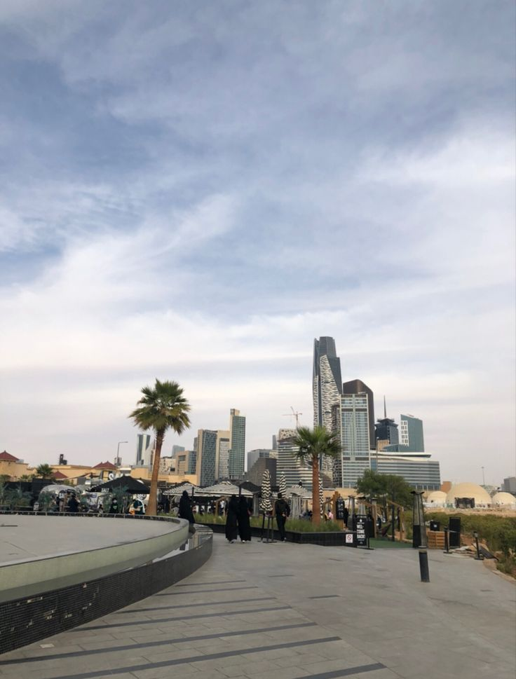

RIYADH • BUSINESS • ENTREPRENEURSHIP
Riyadh is rapidly becoming one of the Middle East's most attractive destinations for entrepreneurs, startups and international companies seeking growth opportunities.
As the capital of Saudi Arabia, Riyadh sits at the center of the Kingdom's economic transformation. Government initiatives, infrastructure projects and private sector growth are creating new opportunities across multiple industries.
The city's strategic importance continues attracting entrepreneurs, investors and multinational companies looking to establish a regional presence.
Saudi Arabia has introduced reforms designed to improve the business environment and encourage investment. Riyadh has become a focal point for economic diversification and private sector development.
Entrepreneurs can benefit from a growing market, strong infrastructure and increasing international business activity.
Starting a business generally involves selecting an activity, registering the company, obtaining licenses and meeting regulatory requirements.
The exact process depends on the nature of the business, ownership structure and sector involved.
Several sectors are experiencing significant growth in Riyadh:
Vision 2030 continues to drive investment and development throughout Riyadh. Major projects, infrastructure improvements and economic reforms are creating opportunities for both local and international businesses.
Entrepreneurs who align with emerging growth sectors may benefit from long-term expansion opportunities.
Businesses can explore various financing options including private investment, partnerships, venture capital and business support initiatives.
As Riyadh's startup ecosystem grows, access to funding and business resources continues improving.
Entrepreneurs should carefully research regulations, market conditions, competition and operational requirements before launching a business.
A clear business plan and strong understanding of the local market can significantly improve the chances of success.
Riyadh is expected to remain one of the region's most dynamic business destinations as Saudi Arabia continues implementing Vision 2030 initiatives.
For entrepreneurs seeking long-term growth, the city offers significant opportunities across established and emerging industries.